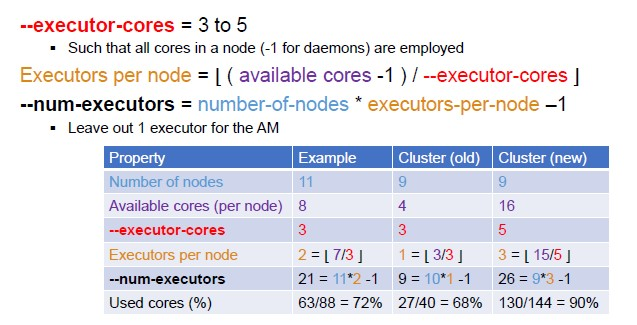
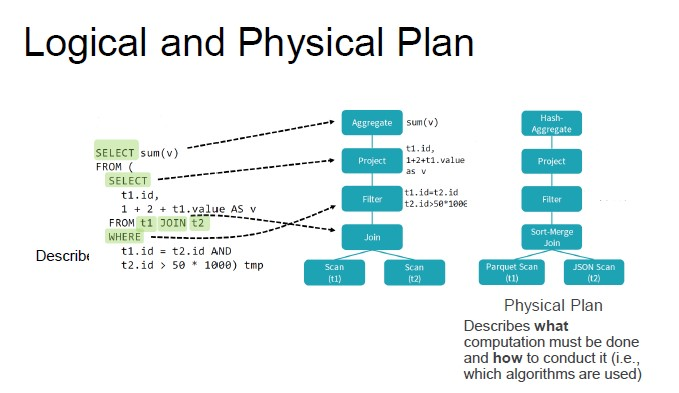
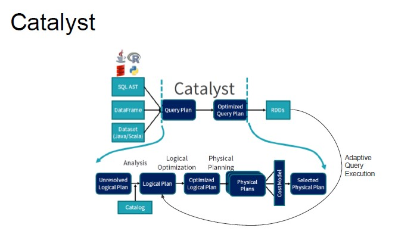
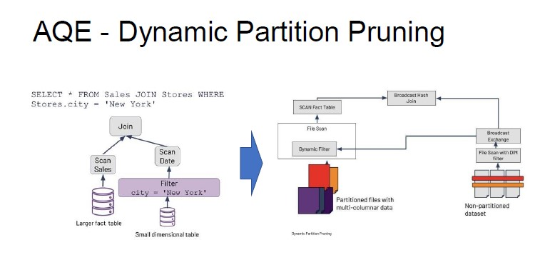

Big Data Introduction ↵
Big Data
Nowadays, we produce more data than the capability of analyze them.
- Data grows faster than energy on chip
Check out the updated infographic
SKA telescope produce 3TB every second. They cannot store all the data but they need to analyze them and store the results.

Big Data - Definition
How can we distinguish big data from normal data? The line is quite vague
Big data exceeds the reach of commonly used hardware environments and software tools to capture, manage, and process it with in a tolerable elapsed time for its user population - Teradata
We can define Big Data following the V's principles:
- VOLUME (dataset that are particularly big)
- VELOCITY, interpreted in two ways:
- velocity in which data are injected
- speed of the analysis that you want to run
- VARIETY (many different formats of data)
- structured vs semi-structured (JSON)
- VERACITY (in many cases, you are dealing on datasets which you cannot fully rely on)
- especially true when you are dealing with social data

The 'V' concept can be extended but we only consider the first four as they are the main ones.
Big Data Hype
Big Data comes mainly from two phenomenons:
- explosion of social networks
- IoT (sensors, smart cities, wearables, industry 4.0)
The data that comes from these two sources is quite enormous with respect to the amount of data produced by companies.
The Long Tail Model - Pareto Rule reversed
The highest value does not come from the small set of highly popular items, but from the long list of niche items.
- Insignificant data is actually the most valuable.
The possibility to handle large amount of data makes you smarter. Sometimes, no complex algorithm is needed:
Google Translate just collects snippets of translations, match it with a long list of translations stored in their dataset, and return the most used one.
- The system is continuously debugged.
Success Stories
- German National Football Team
They applied data analysis to football and they won the 2016 world championship.
- Crime Prevention in LA
- Diagnosis and Treatment of Genetic Disease
- Investments in the Financial Sector
- Astronomical Discoveries
- Injury Prevention of Football Players
Todays' Opportunities and Use Cases
- Healthcare (remote monitoring, preventive care, reduced hospitalization, improved system efficiency)
- Manufacturing (sensors)
- Location-Based Services
- Public Sector (citizen surveys)
- Retail (social media)
Privacy
Marketing campaigns are particularly effective when costumers are going through a change (maternity, new job, lifestyle). A company wanted to send advertising about maternity products BEFORE the baby was actually born. They were able to identify patterns of behaviors adopted by costumers when a baby was coming. However, the company incurred in legal issues because they sent maternity adv to a 16 y.o girl who did not inform the parents about the pregnancy. The company won the legal dispute but it raised some concerns regarding privacy.
Big Data Lifecycle

Acquisition
- Selection (understand which data is actually valuable)
- Filtering and Compression (very important because raw data is often too voluminous to store it all)
- Collect Metadata Collecting Metadata is fundamental to understand, measure, and control the data. Metadata describes the data so it enables trustworthiness, reproducibility and debugging.
There are some software tools that allow you to collect metadata. This is a job that cannot be fully integrated.
- human input is required in this phase :sad:
Extraction
Depending on the analysis that you need to run, you work with specific data.
- Transformation and Normalization
- Cleaning and Error Handling
- Very important because of the untrustworthy of big data
Integration
In most cases, you will work with data coming from different sources, so, you will need to integrate them.
The activities performed to integrate data:
- discover the relationship between datasets
- standardization, conflict management and entity resolution
- resolve heterogeneity and conflicts in data structure and semantics
- understand the trade-off of different modeling strategies
Analysis
- Exploration (approach the data with new explorative approaches to gain a full understanding)
- Analytics (understand which approach works better to solve business problems)
- Delivery (find the best way to model and represent the results)
Interpretation
You need to be careful because sometimes it is common to rush to conclusions. It is important to verify the results:
- when you work with big data you should work on small artificial samples to verify expectations
- identify a subset of the data collected, analyze it and verify the results.
It is interesting to remember that CORRELATION between data does not always mean that it is real.
Correlation is not Causation :heart:
Decision
The decision-making process requires strong managerial skills
Processing Big Data
When you are on a distributed architecture, it is important to manage the distribution of machines. Many problems can happen in distributed environments.
Since data is spread across machines, it is important to replicate those data. Also, it will not be possible to update data at the same time so you will need to deal with consistency (eventual consistency).
- it may happen that data collected at the same time may refer to different momentos.
Big Data Software Stack
New programming environments designed to get their parallelism not from a supercomputer but from computer clusters.
Apache Hadoop
- automate the management of low level applications
- low-level tool, more advanced tools can be applied to it
It is a software library (framework) that allows for the distributed processing of large data sets across clusters of computers using simple programming models.
Rather than relying on hardware to deliver high-availability and reliability, the library itself is designed to detect and handle failures at the application layer, so as to deliver a highly-available service on top of a cluster of computers.
Hadoop Modules
- HDFS (Hadoop Distributed File System) - storage
- layer that handles the storage of data across different machines
- provides ABSTRACTION on the storage of data
- YARN (Yet Another Resource Negotiator) - computation
- decides which unit of application runs in which machine
- if some unit of work fails in some machine, it will recreate it in another machine
- Map Reduce - analysis
- YARN-based system for parallel processing of large data sets
On top of Hadoop
Many different programming solutions can be applied on hadoop:
- Analytics (batch)
- simple/complex computations over large amounts of stored data
- Interactive (real-time)
- operational perspective
- Streaming (near-real-time)
- continuous analytics
- analysis run on continuously incoming data
- there is no much time and resources, you need to adopt some approximation algorithms
Big Data Flow

In the distributed file system, it is often used the metaphor of the Data Lake. A data lake is a central repository system for storage, processing, and analysis of raw data, in which the data is kept in its original format and is processed to be queried only when needed. It can store a varied amount of formats in big data ecosystems, from unstructured, semi-structured, to structured data sources.
NoSQL - NewSQL DBMSs
Relational DBMSs have not been designed to easily distributed. NoSQL DBMSs have risen to fill this gap. NewSQL is the latest frontier which combines the benefits from both relational and NoSQL worlds.
Techniques for Big Data Analysis
- Extract, transform, and load (ETL)
- Data fusion and data integration
- Data management
- Analytics
- Data mining
- Association rule learning
- Classification
- Cluster analysis
- Regression
- Machine learning
- Supervised learning
- Unsupervised learning
- Data mining
- Cloud computing
Goals of Analytics
- Descriptive Analytics (give insights into the past)
- Diagnostic Analytics (understand why something has happened)
- integrating the dataset analyzed with other data to look for correlation paths
- Predictive Analytics (look at the future)
- Prescriptive Analytics (prescribe what action to take to eliminate a future problem)
Job Opportunities
Between 2019 and 2023, companies will hire 210K to 267K professionals with skills in mathematics, computer science, and 4.0. Most demanded professional figures:
- Data Scientist
- Big Data Analyst
- Cloud Computing Expert
- Cyber Security Expert
- Business Intelligence Analyst
- Social Media Marketing Manager
- Artificial Intelligence Systems Engineer
Data Scientist
The main figure emerged with big data is the one of the data scientist (sexiest job in the world).
He deals with data analysis once data volume and velocity reaches a level requiring sophisticated technical skills.

Data Architect
Develop data architecture to effectively capture, integrate, organize, centralize and maintain data.
Data Engineer
Develop, test and maintain data architectures to keep data accessible and ready for analysis.
Data Analyst
Processes and interprets data to get actionable insights for a company.
Ended: Big Data Introduction
Infrastructure and Architecture ↵
Big Data Infrastructures
Scaling -> big data does not fit into a single drive (or a single machine). Big data requires a lot of computer resources.
SMP Architecture
Symmetric Multi Processing, which is adopted by traditional RDBSM has physical limits regarding the number of devices that can be mounted, as well as a BUS bottleneck.
Scaling
- Scale-up (adding more resources like processors, RAM, disk or upgrading the machine)
- Scale-out (adding more machines)
MPP Architecture
Massively Parallel Processing:
- Several processors, equipped with their own RAM and disks, collaborating to solve a single problem by splitting it in several interdependent tasks.
- This architecture requires specialized hardware.
- Vendor lock-in may be an issue with this architecture.
Cluster Architecture (scale-out)
A cluster is a group of linked computers (nodes), working together closely so that in many respects they form a single computer.
- There is no vendor lock-in
- Every node is a system on its own, capable of independent operations
- Unlimited scalability
Compute nodes are stored on racks
- There can be many racks of computer nodes
- The nodes on a single rack are connected by a network
- Racks are connected by another level of network
Scale-up vs Scale-out
Scaling-up PROS:
- Lower power consumption and utility costs
- Less challenging to implement
- Lower licensing costs
- Specialized hardware and software
Scaling-out PROS:
- Infinite scaling
- Generalist hardware and software
- Cheaper machines
- Usually cheaper overall
- Commodity Hardware
- Hardware that can be seen as a commodity
- Large range of vendors
Multiple Clusters
Having a single large cluster allows you to avoid data silos, leading to a simpler governance.
However, multiple clusters are inevitable within medium-large enterprise settings:
- Resiliency (every cluster sits within a single point of failure)
- Software development (mitigate the risk of impacting critical production environments by isolating configuration, integration, or evolution testing and deployment)
- Workload isolation (hardware resources tuned for specific workloads)
- Legal separation
- Independent storage and compute
With the success of cloud services, the independent storage and compute solution for big data clusters is on the rise
- DATA LOCALITY (locate the resource that deal with specific data near to that data, avoiding to move data from one machine to another)
Machines that store data are usually up and running 24/7 as data must be persistent.
Other distributed architectures
Grid Computing - Similar to cluster computing - Each node is set to perform a different task
High Performance Computing Massively parallel systems specifically developed to solve CPU-intensive tasks. Big data systems are mostly data-intensive.
Big Data Architectures
There are a lot of problems related to distributed architectures, especially concerning parallelization:
- Communication between workers
- Access to shared resources
- Parallelization and concurrency
The solution is to have single computer -> Data Center
The core is the framework provider, which is the set of software modules that handles the abstraction of the complexity of the computer system and makes it visible as if it was a single entity.
System Orchestrator -> manages application (both a human being or a program)
ADD DETAILS FROM THE SLIDES!!! 'til 28

ADD DETAILS
Analytical Applications
- Batch Analysis: Take a large amount of data and run analysis
- Run on demand
- Takes a lot of time
- Stream Analysis We devised an algorithm that runs continuously
- Real-time results
- Useful for monitoring
Can we run both batch and stream on the same set of data?
Lambda architecture Most trivial way to handle this problem. It consists in duplicating the data in order to apply both analysis. Data goes through two path:
- Hot path (timely, real-time, less accurate data)
- Cold path (less timely but more accurate data)
Kappa architecture We can simplify the problem and handle everything a stream problem. Stream and batch application are different BUT we can run batch analysis on a stream engine. Data flows through a single patch, using a stream processing system.
Lambda vs Kappa Lambda is easier but it needs parallel development and maintenance of two parallel pipelines. Kappa is the ongoing trend. A streaming engine can handle a bounded dataset and a well-designed streaming systems provide a strict superset of batch functionality.
Ended: Infrastructure and Architecture
Distributed File Systems ↵
Hadoop Distributed File System
The first thing that software has to provide is abstraction, as we want to interact with the disks of the machines as if it was a single machine. We want a single reference and we want to talk to a single entity.
- Master-Slave architecture A single entity works as a master and handles the storage of the data with a set of slaves that are running of single machines.
The software needs to deal with big data:
- Files may be bigger than single disks
- We need to split files into smaller blocks and store them on different machines
ALso, fault tolerance is of key importance: disks can fail, machines can be unreachable, but data should always be available.
- we can store multiple copies of each block
HDFS - definition
HDFS is filesystem designed for storing very large files with a streaming data access patterns, running on clusters of commodity hardware.
- Application that run on HDFS need streaming access to their data sets.
- I do not want to continuously update data with batch operations.
- The emphasis is on high throughput of data access rather than low latency of data access
Blocks -> splitting files into block that range between 64MB and 1GB. We need blocks because files can be larger than disks.
- Why are blocks this big? We focus on giving a high throughput as large files split into many small blocks require a huge number of seeks.
Master - Slave Abstraction
Master service -> namenode
- Persistently maintains the filesystem tree
- Coordinates the storage on different machines
- Keeps in memory the location of each block for a given file (block pool) Slaves -> datanodes
- Store and retrieve blocks
SPoF
The namenode is a single point of failure: without it, the file system cannot be used.
- Backup solution: not the best solution
- Secondary NN Solution: separate machine in which a secondary namenode is installed and does some synchronization with the primary one (while being in a sleeping state).
High Availability
Most of the big data tools and frameworks use this term to reference solutions that answer to the problem of always having data available no matter what.
HA indicates a system that can tolerate faults.
- Supported by configuring two separate machines as NNs:
- One is active (up and running)
- The other is in standby In the event of failure of the active NN, the standby NN takes over.
It s a more complex solution in terms of resources and communication with the network, but it guarantees that in case of failure, there will not be any downtime.
HDFS - federation
There is no need to have a single file system, but we can have many systems on the same cluster. We can create multiple NN that manage different file systems.
This has several advantages:
- Performance (if we have a large filesystem with lots of data, the NN can be a bottleneck in terms of answering to multiple requests of users. By dividing file systems with different NN that address different requests, performance will increase)
- Availability
- Scalability (when the file system is large, the metadata can become quite huge. The metadata block needs to be lowered in memory so splitting metadata among different machines allows scalability)
- Maintainability, Security and Flexibility
HDFS - replication
Whenever we want to save a file in the file system, this will be splitted in blocks and stored separately.
Each data block is independently replicated at multiple DNs in order to improve performance and robustness.
Nodes are organized in racks, that are organized in data centers.
- Hadoop models such concepts in a tree-liked fashion and computes the distance between nodes as their distance on the tree.
The typical rule is to store the first replica on the node (n1) where the client issued the write command. Replica 2 is stores on a node (n2) in a rack (r2) different form n1. Replica 3 is stored on a node different from n2 but tha belongs to r2.

Hadoop 3 alternative to simple replication:
- Each block is split across each data node
- It reduces data redundancy
- It requires less storage (less money)
- Faster writes (when we need to write data, the data to write are less)
- DISADVANTAGES:
- Higher CPU cost (whenever we want to access data, having split the blocks in further blocks, we need to rebuild the blocks)
- Loss of data locality (whenever we have a unit of work that is running on a certain machine, the system tries to instatiate this application as close to the data as possible. This works if all the data are in the same machine, but in this solution data are slit in different machines. Therefore, we cannot apply the data locality principle.)
- Longer recovery time
HDFS not always the best fit
Although this may change in the future, there are area where HDFS is not a good fit:
- Low-latency data access
- Lots of small files
I/O communication
An application client wishing to read a file must first contact the NN to determine where the actual data is stored.
- The NN identifies the relevant block
- The client contacts the DN to retrieve the data
Features of design:
- The namenode never removes data
- All data transfer occurs directly between clients and DNs
- Communications with the NN only involve transfer of metadata
File Formats
The hadoop ecosystem supports several different formats:
- Standard file formats
- Hadoop / BigData-specific formats
Hadoop-specific formats involves several advantages:
- Serialization
- Splittability (if the file is split into multiple blocks, metadata headers allow to skip unnecessary I/O)
- Metadata is associated with each single block (the client can access individual blocks)
- Compression (if you want to compress the data, you use a compression mechanism that works on a block-level or at a record-level)
There are many file formats - row-oriented:
- Sequence files
- Apache thrift (Facebook), Protocol buffers (Google)
- They both create a notion of schema that has to be used in order to read the data
- Some code specifies how the data are structured
- Apache Avro
- Each file contains its own schema definition (no need to share separately the schema of the file because it is included in the file itself)
Column-oriented file formats
This formats store data based on columns. Column-oriented formats are better suited for analytical scenarios. This because in a typical analytical query, you want to take data from a subset of columns and perform analysis.
This format is not ideal for operational purposes (day-to-day operations in a database).
There are several advantaged to column-oriented file formats:
- Better compression (similar values because data is more homogeneous)
- Reduced I/O for analytical queries
- Operate on encoded data
There are many file formats:
- ORC Files
- Apache Parquet (general purpose)
Parquet
Besides storing data in a column format, it allows to store nested structures (like JSON) in a flat format.
Data Model Nested attributes that have multiple values.
- Types:
- Group
- Primitive
- Frequency:
- Required
- Optional
- Repeated
Unnesting Can we store nested data structures in a columnar format? we need to map the schema to a list of columns in a way that we can write records to flat columns and read them back to their original nested data structure.
- Each value is associated with two integers (repetition level and definition level)
- These integers allow to fully reconstruct the nested structures while still being able to store each primitive separately
When I put values in a column formats, I do not know which value belongs to which record. Rebuilding the structure of the rows just by looking at the values cannot be done. The parquet format allows to reconstruct the message.

Parquet uses a definition level that defines the level of definition (0,1,2,3...), dealing with optionality. This allows you to understand which values exist. Inside the hierarchy, some fields are mandatory and others are optional.
Repetition Level The presence of repeated fields requires to store when new lists are starting in a column of values. Repetition level indicates at which level we have to create a new list for the current value.
By using these two values (repetition and definition), I am able to fully reconstruct the message.
Repetition and definition level cause overhead (they occupy space).
- The number of bits that has to be used is quite small (1,2,3... the number of levels) and in some case they can be omitted
- The repetition levels are stored in a column so they can be compressed
Parquet file format We have a notion of row group -> the data are not fully columnar. We do not store all the values of each column continuously. Usually, we split the file into row groups (horizontal partitioning) and each block of rows store the data in a columnar way.
- COlumn chunk (chunk of the data for a particular column) All the values of each columns is further subdivided into pages. The size of the row group is set to the same size of the block (each block corresponds to a row). Data page size -> it can be tuned (smaller or larger) depending on what query we need to issue.
Ended: Distributed File Systems
Batch Application ↵
YARN - Yet ANother Resource Negotiator
In the same cluster, I want to run some programs and applications. The problem regards how these computations allocate resources.
The resource negotiator:
- In charge of assigning units of work
- Has a global view of the resources available in the cluster
- Decides where and when each uint of work should be allocated and with how many resources
- Uses a scheduling policy to manage concurrency
- Avoids over-instantiation of processes
- Handles fault-tolerance
Potentially, we can run as many process as we want on each machine but we do not want to overload it.
YARN provides APIs for requesting and working with cluster resources.
- It is a general framework (works with any kind of application you want to run)
- Application are written using analytical frameworks
Main Daemons
YARN work with the master/slave mechanism:
- Resource Manager (ultimate authority that arbitrates among all the applications)
- Node Manager (per-node slave)
- In charge of running containers which run applications (virtual abstract entities associated with a certain amount of resources. We have a virtual environment that run applications)
For each application. there is one container that runs a special process that in charge of coordinating the single operation.
Coordination happens on two levels:
- Resource Manager, composed by two components:
- Application Manager (start the application - accept request from client and start the machine)
- Scheduling component (decides where resources should be allocated)
- For each application, we have another process (application master process) that manages the resources of each application
Application execution consists of the following steps:
- A client program submits the application, including the necessary specifications to launch the application-specific AMP itself
- The RM assumes the responsibility to negotiate a specified container in which to start the AMP and then launches it
- The AMP registers with the RM
- The AMP negotiates appropriate resources containers
- On successful container allocations, the AMP launches the container by providing the container launch specification
- The application code executing within the container provides necessary information
- During the application execution, the client that submitted the program communicates directly with the AMP to get status and updates
- Once the application is complete, the AMP de-registers with the RM and shuts down, allowing its own container to be repurposed
YARN Scheduler
YARN provides a choice of schedulers and configurable policies:
- FIFO scheduler (useless)
- Fair Scheduler (with multiple applications that want to access the resource, the scheduler will balance the resources among the two applications)
- Problem related to prediction of execution time as resources are split
- Capacity Scheduler (the amount of resources is divided in two profiles - fixed amount)
- Each application run within a profile have access to a fixed amount of resources
- Execution time is predictable but there may be a waste of resources
Data Locality
When the scheduler needs to identify the resources to allocate, it does so following the data locality principle. The point is to exploit cluster typology and data block replication to apply the data locality principle.
When computation involves large set of data, it is cheaper to move code to data rather than data to code
Map Reduce
It is based, in general, on key-value pairs (data is structured in couples). It is a programming model and an associated implementation for processing and generating large data sets.
How it works:
It is based on typical analytical problems, in which you have large datasets and you want to extract something, you reorganize the data to compute aggregations and generate a final output.
Map operations and reduce operations
- MAP takes a function f and applies it to every element in a list
- FOLD iteratively applies a function g to aggregate results
Parallelization
The map operation includes all operations can be parallelized in a straightforward manner, since each functional application happens in isolation.
Reduce operation has more restrictions on data locality.
MapReduce Program
The map function requires an input (key-value pairs), that are chosen by the programmer.
- Map (k1, v1) -> list(k2, v2)
- Reduce (k2, list(v2)) -> list(k3, v3)
The output of the map function is a list containing all the values in the row, while the reduce function takes as input a key and the list with all the values associated with that key.
MapReduce program = job
- Each job is divided into smaller units called tasks
- The tasks are scheduled using YARN and run on nodes in the cluster
MapReduce Process
- Input is divided into fixed-size splits
- A Map task is created for each split
- The key-value pairs returned by Map tasks are sorted and stored in the local disk
- Map outputs are sent to the nodes where the Reduce tasks are running
- The key-value pairs returned by Reduce tasks are written persistently onto the DFS

Example - Word Count
Counting the number of occurrences for each word in a collection of documents.
Input: a repository of documents (each document is a value in the input pairs)
Map function: read a document and emit a sequence of key-value pairs
Shuffle and Sort: group by key and generate a pairs of the form
Reduce function: add up all the values for a given key and emits a pair of the form (w, m)
Output: w is a word that appears at least once among all the input documents; m is the total number of occurrences of w among all those documents
Map(String docid, String text):
for each word w in text:
Emit(w, 1);
Reduce(String term, counts[]):
int sum = 0;
for each c in counts:
sum += c;
Emit(term, sum);
Map in Java
public class WordCountMapperextendsMapper<LongWritable, Text, Text, IntWritable> {
private static final IntWritableone = newIntWritable(1);
privateText word = newText();
public void map(LongWritablekey, Text value, Context context)
throwsIOException, InterruptedException{
String line = value.toString();
StringTokenizertokenizer = newStringTokenizer(line);
while(tokenizer.hasMoreTokens()) {
word.set(tokenizer.nextToken());
context.write(word, one);
}
}
}
Reduce in Java
public class WordCountReducerextendsReducer<Text, IntWritable, Text, IntWritable> {
public void reduce(Text key, Iterable<IntWritable> values, Context context)
throwsIOException, InterruptedException{
intsum = 0;
for(IntWritablevalue : values) {
sum += value.get();
}
context.write(key, newIntWritable(sum));
}
}
Combiners
When the reduce function is associative and commutative, we can push some of what the reducers do to the Map tasks. In this case, we also apply a combiner to the Map function. The combiner function must be associative and commutative.
Advantages:
- It reduces the amount of intermediate data
- It reduces the network traffic
Data Partitioning
Maps:
- Partitioning depends on the input splits
- One map task per input split
Reducers:
- Data is shuffled and according to partitioning function, it decides, for each key, which reducers it goes to
- Based on the number of nodes and available resources
- Can be defined by the user
The keyspace of the intermediate key-value pairs is evenly distributed over the reducers with a hash function (same keys in different mappers end up at the same reducer). The partitioning of the intermediate key-value pairs generated by the maps can be customized.
How does it work:
- Let p be the number of reduce tasks
- The partitioner adopts a hash function that translates a key to a number from 0 to p-1
- Each output ket-value pair is stored in one of p files
- The reduce task collects from every map task the partitions with the same hash value
Tuning the number of reduce tasks
Hadoop used to create only one, global reduce task by default (mainly used). Deciding the number of reduce task is not easy; it is more an art than a science.
One solution would be to devise single task for every CPU available in the cluster. In this way, all CPUs are working but in reality, there are often more keys to process than available CPUs.
Another solution would be to create multiple tasks for each CPU. From a certain perspective, it may seem a waste but actually, this solution mitigate skewness problems.
General rule of thumb: each task should run for about 5 minutes and produce more than 1 HDFS block's worth of output.

MapReduce Execution
An important idea behind MapReduce is separating the what of distributed processing from the how.
The developer launches the job on the client's JMV, which contacts the YARN RM to submit the application.
Data locality enforcement Main principle: do not move data to workers, move workers to data.
The task are created from the input splits in the shared file system
Optimization: prefer nodes that are on the same rack in the data center as the on holding the data block. Inter-rack bandwidth is significantly less than intra-rack bandwidth.
Map Execution STEPS


MapReduce Algorithms
MapREduce is a framework, not a tool. You must fit your solution into the framework of map and reduce. In some situations, it might be challenging and translating ML and DM to the MapReduce paradigm is not trivial.
Sometimes, we may need multiple map / reduce stages and build chains of maps and reduces.
Filtering algorithms to find lines/files/tuples with a particular characteristic.
Summarization algorithms to compute the maximum/sum/average over a set of values.
Join to combine different inputs on some shared values.
Sort to sort inputs in the preferred order.
Two Stage MapReduce
As map-reduce calculations get more complex, it is useful to break them down into stages:
- The output of the first stage serves as input to the next one
- The same output may be useful for different subsequent stages
- The output can be stored in the DFS, forming a materialized view
Early stages of map-reduce operations often represents the heaviest amount of data access, so building and saving them once as a basis for many downstream uses saves us a lot of work.
Apache Spark
How did we get from Hadoop's MapReduce to Spark?
Hadoop's MapReduce is the result of many years of development but in the meanwhile, a lot has changed. Before, disk was the primary source of data and machines were mostly single core. Now, RAM is the primary source of data and machines are mostly multi core.
Limitations of MapReduce:
- It is designed for batch processing
- It has a strict paradigm
- New hardware capabilities are not exploited
- Too much complex
Apache Spark Framework
Spark relies on two main abstractions:
-
RDD (Resilient Distributed Dataset): immutable distributed collection of objects
- Resilient (automatically rebuild on failure)
- Distributed (the objects belonging to a given collection are split into partitions and spread across the nodes)
- Immutable (once created, it cannot be modified)
- Lazily evaluated (optimization before execution)
- Cachable (it can persist in memory, spill to disk if necessary)
- Type inference (data types are not declared but inferred)
-
DAG (Direct Acyclic Graph): based on the user application and on the lineage graphs. Sparks computes a logical execution plan in the form of a DAG.
- Sequence of computations performed on data
- Nodes are the RDD (created to compute the result)
- Edges represents the operations The execution plan is compiled into physical stages
The distinction among different stages (boundaries) is set by shuffle operations. Operation with narrow dependencies are pipelined as much as possible.
For each stage, we have different tasks:
- A task is created for each partition in the new RDD
- Tasks are scheduled and assigned to the worker nodes based on data locality
- The scheduler can run the same task on multiple nodes in case of stragglers
RDD
Creation
RDD can be created in two ways:
- By loading an external dataset
- By distributing a collection of objects that you have in memory
By default, RDD are not persisted: they are recomputed each time they are needed in an action. Therefore, there is no need to occupy memory if the RDD is not used again.
Operations
RDDs offer two types of operations:
- Transformations (all the operations that allow you to create a new RDD from a previous one)
- Actions (compute a result that is either returned to the driver program or saved to an external storage system)
Metadata
RDD transformations cause only metadata change. Each RDD stores a set of a metadata:
- Partitions (set of data splits associated with the RDD)
- Partitioner (how the data is split into partitions)
- Dependencies (list of parent RDDs involved in computation)
- Compute (function to compute partition of the RDD, given the parent partitions from the dependencies)
- Preferred locations (where is the best place to put computations on this partition)
Lineage
The set of RDD dependencies is logically represented as a linear graph which allows for fault tolerance system without checkpointing. The derived physical execution plan can be optimized by aggregating different operations and exploiting data locality.
Dependencies
In the dependency graph, we can distinguish between two kinds of dependencies:
- Narrow dependencies (it allows for pipelining on one cluster node)
- Wide dependencies (it cannot be pipelined, as they require data shuffling)

In spark we have different operations (Map function) that can be reduced using operations like 'groupbykey', 'reducebykey' and 'join'.
Persistence
Persisting a dataset in memory across operations is one of Spark's most important capabilities. By default, each RDD is recomputed each time an action is run on it. When you persist an RDD, each node stored in memory the partitions that are computed, allowing for faster future actions.
Spark Application Decomposition
- Application (single instance of SparkContext that stores data processing logic and schedules series of jobs, sequentially or in parallel)
- Job (complete set of transformations on RDD that finishes with action or data saving, triggered by the driver application)
- Stage (set of transformations that can be pipelined and executed by a single independent worker)
- Task (basic unit of scheduling which executes the stages on a single data partition)

Spark Architecture
Spark uses a master/slave architecture with one central coordinator (driver) and many distributed workers (executors).
Drivers and executers are independent Java processes which form a spark application. The architecture is independent of the cluster manager that Spark runs on.
Cluster Manager: it is responsible for assigning and managing the cluster's resources
Executor: it is responsible for executing the received tasks (defined by the driver). Each executor can run multiple tasks at the same time.
Driver Program: each spark application have one driver that converts user program into tasks.
Spark Architecture in YARN
- Driver Program = Application
- Executor < Container
- Cluster Manager = Resource Manager
Spark vs MapReduce
Since executors are fixed, the containers to be instantiated are just those for the executors. Each container runs the executor and each executor can run multiple tasks.
The level of parallelization is restricted by the number of executors.
Deployment
There are three different deployment modes:
- Cluster mode (the driver process runs directly on a node in the cluster)
- Client mode (the driver process runs on a machine that does not belong to the cluster)
- Local mode (both driver and executors run on the same machine)
Partitioning
Data in RDD are split into multiple partitions, which serve two purposes:
- parallelize computation across workers and CPU cores
- Minimize network traffic for data exchange between executors
If not specified, SPark sets the number of partitions automatically. The number of partitions are important as one task is run for each partition:
Too few partitions results in less concurrency and risks from data skewness, while too many partitions results in excessive overhead in managing small tasks.
Rule of thumb:
- Lower bound: 2 partitions for each core
- Upper bounds:
- each task should take at least 100/200 ms to execute
- a block worth of data
When in doubt, more partitions is usually better.
RDD Partitioning Criteria
The partitioning criteria is used to:
- Put values that belong to the same key in the same partition
- Define how the key should be distributed in different partitions
- No control over the specific worker node a partition goes to
Partition criteria triggers shuffle operations so, forcing a partitioning criteria on a RDD is costly and there is no explicit control over which worker node each key goes on.
Different partitioning data:
- Hash Partitioning: hashing using the Java hashCode
- Range Partitioning: distributes data into uniform ranges
- Custom Partitioning: user-defined partitioning
When is it useful?
If I repartition an RDD based on some criteria, then I know that all the values with the same key will end up in the same partition.
Shuffling
Shuffling is the mechanism used to re-distribute data across partitions. It is necessary to compute some operations but it is costly and complex.


In time, Spark has provided a number of shuffling implementations:
- Hash shuffle: each map task creates a file for every reducer. In this article is explained clearly (kinda)
- Each executor holds a pool of files
- A single group contains a file for every reducer
- An executor contains as many groups as the mapper than can run in parallel in the executor itself
- Sort shuffle: each mapper keeps output in memory, spills to disk if necessary.
- Each mapper spills to its own file
- Each file is sorted by reducer
- When a reducer ask for data, the pieces from each file are collected, sorted in memory, and sent to the reducer
- Tungsten sort: evolution of the sort shuffle, but it works on serialized data (no need to do de-serialization and serialization).
- Improves performance of the sort shuffle technique
- It works only under certain constraints
As of today, one single implementation is provided: SortShuffleManager
- If conditions allow it, tungsten sort is adopted
- Hash shuffle is convenient only if you need to create an output with few partitions (low number of files)
- Otherwise, sort shuffle is adopted
Cluster Configuration
In the SPark architecture, the level of parallelization is also given by the number of resources allocated.
The number of resources that we can ask for is given in the amount of memory and CPU. All the executors have the same configuration and the number of executors is fixed as well.
Tuning CPU
We can either set the number of executors or the cumber of cores per executors. The best thing to do is to have fewer executor with a high number of cores. Single-core executors throw away the benefits that come from running multiple tasks in a single JVM.
When deciding the number of CPU, it is important to remember that not everything should be allocated to the executor, as there are other parties.
It is good practice to leave at least one core per machine for other services.

Tuning Memory
Tuning memory can be done by setting the amount of memory per executor.
We should keep in mind that executors with too much memory often result in excessive garbage collection delays.
Ended: Batch Application
SQL on Hadoop ↵
SQL on Hadoop
SQL on Hadoop is a class of application tools that combine established SQL-style querying with newer Hadoop data framework elements
SQL options on Hadoop
- Batch SQL (apache Hive)
- In-Memory SQL (Apache Spark)
- Interactive SQL (Impala)
- Operational SQL (Apache HBase, NoSQL)
Data storage
- Only NoSQL database directly handle data storage
- Some tools provide a relational abstraction over HDFS
Execution Engine
- Most tools directly handle query execution
- Hive pushes execution to other tools
Spark SQL
Instead of working with RDDs, we work with datasets. With dataset, type conformity is checked at compile time.
They are lazily evaluated but supports under-the-hoop optimizations and code generation.

Pros and Cons of Structure
- Structure imposes some limits (RDDS enable any computation through user defined functions)
- The most common computations are supported
- Language simplicity
- Opens the room to optimization

The goal is to obtain an efficient and optimized logical plan, on which physical plans are generated.
Logical Optimization
It is based on rules, which is a function that can be applied on a portion of the logical plan.
Several types of rules:
- Constant folding (resolve constant expressions at compile time)
- Predicate push-down (push selection predicates (filters) close to the sources)
- Column pruning (project only the required column)
- Join reordering (change the order of join operations)
These rules are applied recursively (maybe the application of a rule enables the application of another and so on) until the plan reaches a fixed point and no more optimization can be done.
Physical Optimization
Once you have a physical plan, you also need to estimate the execution time. The cost of operating on a certain dataset is characterized by the amount of time lost in terms of computation, CPU, I/O operations from the disk.
- I/O operations depends on the size of the data set
- The cost of the amount of computation depends on the cardinality of the dataset

Other important factors:
- Network throughput
- Disk throughput
- Allocation of resources
- Allocation of tasks
Rule based physical optimization
- Operation pipelining
- Predicate push-down (filtering performed during physical scan)
Join method selection
- Broadcast Hash join (if you have two dataset to join and one is not very big, you can replicate the same table for all the partition of the other dataset to avoid reorganization)
- Shuffle Hash join (data are reorganized based on the join attribute and the HJ method is applied)
To select a join method, the following conditions need to be considered:

Adaptive Query Execution
Every time that you need to carry out a shuffle operation, the catalyst process is repeated again, because there are many parameters that have to be checked.

The main idea of AQE is to do reviews at each stage boundary.
If we want to carry out a join operation to identify the sales carried out in NY. The sales dataset is partitioned by the stores, so we have multiple partitions (blocks) depending on the store_id.
WIthout optimization we would need to carry out the join on all the stores and then apply a filter on NY.
With AQE, we can partition data through broadcast hash join.

Drawbacks
- The execution stops at each stage boundary for SPark to review its plan but the gain in performance in usually worth
- The Spark UI is more difficult to read as each stage becomes a different job
Ended: SQL on Hadoop
NoSQL DBMSs ↵
NoSQL DBMS
Relational DBMS have lots of features like ACID properties, data integration and normalization schemas, standard model and query language and robustness.
However, a part from advantages, RDBMS have also weaknesses:
- Impedance mismatch (data are stored according to the relational model, but applications to modify them typically rely on the object-oriented model)
- Painful scaling-out (not suited for a cluster architecture and distributed environments)
- Consistency vs latency (today's applications require high reading/writing throughput with low latency)
- Schema rigidity (schema evolution is often expensive)
NoSQL in the Big Data world
NoSQL systems are mainly used for operational workloads (OLTP).
Big data technologies are mainly used for analytical workloads (OLAP).
Data Models
One of the key challenges is to understand which one fits best with the required application:

Graph Data Model
Each database contains one or more graphs. Each graph contains vertices and arcs.
- Vertices: usually represent real-world entities
- Arcs: represent direct relationships between the vertices
The graph data model is intrinsically different form the others:
- It is focused on the relationships rather than on the entities per-se
- It has limited scalability (it is often possible to shard a graph on several machines without cutting several arcs)
- It is a data-driven modeling
- It is based on the concept of encapsulation
Document Data Model
Each database contains one or more collections, each of which contains a list of documents (JSON). Each document contains a set of fields and each field correspond to a key-value pair.
Depending on the query that I want to carry out, I can choose the most suitable model.
Key-value Data Model
Each database contains one or more collections and each collection contains a list of key-value pairs.
Wide Column Data Model
Each database contains one or more column families and each column family contains a list of row in the form of a key-value pair.
Each column is a key-value pair itself while rows specify only the columns for which a value exists.
The query language expressiveness is in between key-value and document data models.
Sharding Data
One of the strengths of NoSQL systems is their scale-out capability. Two aspects must be considered when deploying on a cluster:
- Sharding (subdividing data in shards that are stored in different machines)
- Replication (data is copied on several nodes)
Master-Slave Replication
Master: manager of the data
- It handles each and every write operation
- It can be chosen or drawn
Slaves: enables read operations
- It is in sync with the master
- It can become master if the latter fails
Pros and cons of the master-slave replication:
PROS:
- Easy handles many read requests
- Useful when the workload mainly consists of reads
- Useful to avoid write conflicts
CONS:
- The master is a bottleneck
- Delay in write propagation can be a source of inconsistency
- Not ideal when the workload mainly consists or writes
Peer-to-peer Replication
Each node has the same importance and can handle write operations. The loss of a node does not compromise reads nor writes.
Pros and cons of the peer-to-peer replication:
PROS:
- The failure of a node does not interrupt read or write requests
- Write performances easily scale by adding new nodes
CONS:
- Conflicts
- Delay in write propagation can be a source of inconsistency
- Two users may update the same value from different replicas
Managing Consistency
RDBMS come from decades of widespread usage with a strong focus on data consistency and years of research activities to optimize performances.
NoSQL systems are designed to succeed where RDBMS fail:
- Strong focus on data sharding and high availability
- Quite simple systems
- Speed and manageability rather than consistency at all costs
CAP Theorem
According to the CAP theorem, only two of the following three properties can be guaranteed:
- Consistency (every node returns the same, most recent, successful write)
- Availability
- Partition Tolerance (the system continues to function and upholds its consistency guarantees in spite of network partitions)
In distributed systems, network partitioning is inevitably a possibility.
It sacrifices consistency over latency.
PACELC Theorem
It is an evolution of the CAP theorem.
if {Partition} then {Availability or Consistency?}
Else
{Latency or Consistency?}
Inconsistencies are tolerated in this area because latency is considered as being much more important.
For example, for Amazon, it is more important that users can navigate quickly rather than consistency in products data.
This because inconsistency does not impact user experience that much as latency would be.
Ended: NoSQL DBMSs
Data Streaming ↵
Data Streaming
Big data is not just about batch analysis, but also about analyzing data streams.
Streaming data processing is a big deal in big data for many reasons:
- Latency (produce results in a more timely manner)
- Workload balancing (distribute the workload in an efficient way)
Despite this business-driven surge of interest in streaming, batch system are generally more mature than their streaming brethren.
Use cases:
- Operational monitoring
- Web analytics
- Online advertising
- Social media
- Intern of Things
Real time Data Streaming

For some systems, real-time is crucial. For example, a system that displays stock options has no tolerance for delay.
In some systems, delays would imply the total system failure (like with pacemaker).
Streaming System
The term streaming has been used for a variety of different things but in our context, a system for data streaming is a type of data processing engine that is designed with infinite datasets in mind.
Both batch engines and streaming engines can be used to process infinite datasets.
Data Streaming Characteristics:
- Infinite dataset (no control over the order in which elements arrive)
- Infinite computation (there must be a plan to avoid overflowing and enable auto-scalability)
- Low-latency , approximate and speculative results
- Since we want to process data in real-time, data can usually be processes a single time
- Only a fraction of the dataset can be kept in memory for analysis
- Approximation may be required to accommodate the low-latency requirements
Data Stream Models
- Time series Model (stock prices)
- Cash Register Model (packages sent to IP addresses)
- Turnstile Model (people entering a subway)
Architecture
There is a lot of data movements among the different phases, which can be handles directly in the application that carry out the different activities or relying on a message queueing service.
This message queueing service works as a message bus connected to the single applications.
Message Queuing Service
The message queueing tier handles the transportation of data between different tiers.
- By decoupling the pipeline of operations, each node in the cluster will do one job only
- Message queueing provides a solid framework for a safe communication between such nodes
- Message queuing handles funneling of n data streams to m consumers
In the message queueing system, we have he notion of a borker, which handles the communication, by means of queues. The broker creates different queues, one for each topic, and keeps the data for a certain amount of time.
We can decide the level of delivery semantics, which refers to the level of precision in sending the message form producer to consumer.
- Exactly once: a message is never lost and is read once and only once
- At most once: a message may get lost, but it will never be read twice
- At least once: a message will never be lost, but it may be read twice
- Less control but you avoid data getting lost (tradeoff)
Analysis
The analysis tier is the heart of the architecture and handles the analysis of the data.
In a continuous query model, you issue a query once and then it is continuously executed against the data.
- Memory constraints (data cannot be processed all together)
- Time constraints (data that cannot be processed in time may have to be dropped) -> load shedding
- Algorithms may ose efficacy over time -> concept dirft

stateless query -> each execution is independent from the other
Distributed Execution: it refers to an architecture that is common to different frameworks.
We can consider three aspects:
- Message delivery semantics
- State management (where to store intermediate state)
- Fault tolerance
- Job replication (many nodes carry out the same job)
- Rollback recovery (periodically store checkpoints and maintain a log of operations)
Windowing
Windowing techniques can be adopted to carry out analysis on a per-window basis (instead of a per-item basis).
In general, windows are defined by:
- Length (number of contained items)
- Period (period after which the items in the window are processed)
We can identify two types of windows:
- Sliding windows (define length and period in terms of stream time)
- Fixed windows (length and period are the same)
- Overlapping windows (length is greater than the period)
- Sampling period (length is smaller than the period)
- Data-driven windows (define the length in terms of the content that comes with the data)
Stream time and Event time
Ideally, an event is processed exactly as it happens. In reality, there is a different between the time at which an event occurs (event time) and the time at which an event enters the streaming system (stream time).
The time difference is called skew and it may be due to:
- Hardware issues
- Software issues
Windowing by stream time
It has an extremely straightforward implementation, windows are always complete and it is possible to infer information about the source as it is observed.
On the other hand, event time cannot play an important role and, even if the data source sends events ordered by event item, it is not guaranteed that they arrive immediately or in the same order.
Windowing by event time
It is the gold standard of windowing. However, it is impossible to precisely know when the window can be closed. Also, extended window lifetime implies more buffering of data and most processing systems lack native support.
Triggers can be applied to declare intervals of intermediate processing of windows. They can be based on:
- Watermark progress
- Processing time progress
- Element count
- Record features
Since late date (data that arrive after the watermark is defined) is realistic, a policy for allowed lateness must be defined.
Algorithms
Consider n the space of events captured by the data stream.
Streaming algorithm have the following requirements:
- One-pass (once examined, items must be discarded)
- Use small space for the internal state
- Fast update of the internal state
- Fast computation of answers
- Provide approximated answers
Analyzing a data stream is challenging due to space constraints, time constraints and algorithm infeasibility in one-pass.
One solution is to rely on approximated algorithms, where approximation can be achieved by relying on two main concepts:
- Sampling (sampling algorithms are known on time series and cash register models)
- Random projections (relies on dimensionality reduction using projection along random vectors)
Algorithms
Random Sampling with a Reservoir
Random sampling is a common technique in data streaming.
Use case: YouTube
The goal is to perform a real-time statistical analysis of the watched videos. On the surface it seems pretty easy, but, how do we know that data is random?
Reservoir sampling is based on the notion of reservoir. We cannot hold a predetermined number of stream values but, when a new value arrives, we can probabilistically determine whether to add it to out collection or to discard it.
The reservoir is always filled with the first r values in the stream, where r is the size of the reservoir.
For any element, the probability to go inside or outside the reservoir is the same.

Hyperloglog
Count distinct elements.
Use case: Facebook
The goal is to count the users that are connected to the website.
There are two general categories for the count-distinct problem. Hash functions can be used to translate input items to a uniform distribution in some bounded domains.
Order statistics-based algorithms:
- Based on the evaluation of the order statistics
- Since the distribution is uniform, we know that the lowest value is 1/number of elements
- ONly the minimum value must be stored (no need to store hash tables)
Bit-pattern-based (HyperLogLog) algorithms:
The basis of the HyperLogLog algorithm is the following observation:
The cardinality of a multi-set of uniformly distributed random numbers can be estimated calculating the maximum number of leading zeros in the binary representation of each number in the set.
Given a binary string, the probability to observe:
- 1 initial zero: 50%
- 2 initial zeros: 25%
- 3 initial zeros: 12.5%
- n initial zeros: 1/n
if I know the maximum number of initial zeros ever observed is n, than i can guess that it must have taken approximately 2^n attempts.
Membership
Use case: YouTube
The goal is to identify whether a certain video has been viewed.
We can rely on an old data structure: Bloom filters. A bloom filter can return false positives, but no false negatives.
A bloom filter is an array of m bits, with m > n. Incoming items are processed by a series of hash functions.
The optimal number of hash functions depends on the desired probability of false positives. The optimal number of bits also depends on the number of expected elements.
Frequency
Use case: YouTube
We want to know how many times has a specific video been viewed today.
We want a space efficient structure and the answer relies on hashes and builds on the concept of Bloom filter.
Count-Min Sketch: it is the most common algorithm for this problem
Ended: Data Streaming
Cloud Platforms Introduction ↵
From Database to Platform
How did we get here?
- Data-driven innovation
- Data and analytics to foster new products, processes and markets
- Drive discovery and execution of innovation, achieving new services with a business value
- Analytics
- Umbrella term that include different BI and application-related initiatives
- Advanced analytics
- Autonomous examination of data to discover deeper insights, make predictions, or generate recommendations
- Augmented analytics
- Use of technologies such as ML and AI to assist with data preparation, insight generation and insight explanation
Data Platform
Getting value from data is not (only) a matter of storage.
Database
A database is a structured and persistent collection of information about some aspect of the real world organized and stored in a way that facilitates efficient retrieval and modification. The structure of a database is determined by an abstract data model.
Operational databases are application-oriented.
Data Warehouse
A collection of data that supports decision-making processes. It provides the following features:
- Subject-oriented
- Integrated and consistent
- Not volatile
Depending on the application or the workload, we need to identify the most suitable data model to adopt.
Data warehouse allows Operational Data Storage, which integrate data from different applications.
Data Lake
In the data lake, we can save data of different format (raw data). By storing raw data, we do not need to design ETL techniques, as with DW, but we can simply store data as they are.
Data lakes are centralized repositories used for storage, processing, and analysis of raw data, in which data is kept in its original format and is processed to be queried only when needed.
They can store a varied amount of formats in big data ecosystems, from unstructured, semi-structured, to structured data sources.

Data warehouse is mainly relational, while data lakes are not.

Data lakes have increasingly taken the role of data hubs. Drawing a sharp line between storage, computation and analysis is hard. Architectural borderlines are blurred and DL are often replaced by data platforms or ecosystem.
Data Platform
An integrated set of technologies that collectively meets an organization's end-to-end data needs such as acquisition, storage, preparation, delivery, and governance, as well as a security layer for users and applications.
We need to relieve users from complexity as they are only interested in the result.
Also, data transformation must be governed to prevent data platforms turning into a swamp.
Data Management
Requirements:
- Availability
- Consistency / Integrity
- Security
- Scalability
- Redundancy / Data Quality
Data Provenance (lineage)
Data that describes the data by indicating the provenance. As soon as data arrive in the database, we need to know its provenience.
Use Cases: Research
Collecting data is expensive so the scientific field is moving towards more collaborative research and organizational boundaries are disappearing.
Sharing data and metadata across organizations is essential but you need to identify the sources in order to avoid bad quality data.
For example, astronomers are creating an international Virtual Observatory.
Compression of data can be either lossless of lossy. Compressing data in astronomy can result in data corruption.
Decide the proper level of provenance is more art than science because storing too much data about provenance can be too burdensome.
Granularity
- Fine-grained (instance-level): tracking data items
- Course-grained (schema-level): tracking dataset transformation
Queries:
- Where (which input did the output come from)
- How (how were the inputs manipulated)
- Why (why was data generated)

Data Profiling
In a data lake we have many different resources that need to be profiled.
In a relational scenario, tables of a relational database are scanned to derive metadata, such as data types and value patterns, completeness and uniqueness of columns, key ad foreign keys, and occasionally, functional dependencies and association rules.
At some point, collecting and managing data features can become too complex.
Use cases:
- Query optimization
- Data cleansing
- Data integration and analytics
However, the results of data profiling are computationally complex to discover. Verification of complex constraints on column combinations in a database.
Data Versioning
Version control refers to a class of systems responsible for managing changes to computer programs, documents, or data collection.
Changes are identified by a number / letter code, termed the revision / version number.
However, data pipeline is not only about code but also about:
- Model Version control
- Data version control
- Model parameter tracking
- Model performance comparison
Data versioning support CRUD (Create, REad, Update, Delete) operations with versions.
Storing different versions of a program can result in storage issues.

Compression and Entity Resolution
Compression allows a concise representation of a dataset in a comprehensible and informative manner.
Entity resolution finds records that refer to the same entity across different data sources.
Is using metadata enough?
No, metadata can become bigger than data themselves and data management is still a research issue in data platforms.
Data Lakehouse
Data lakehouse is a data management architecture that combines the flexibility, cost-efficiency, and scale of data lakes with the data management and ACID transactions of data warehouse, enabling business intelligence and machine learning on all data.
The idea of data lakehouse comes from data bricks: they analyze metadata internally but is subject to vendor lock in.
Data Fabric
Frictionless access and sharing of data in a distributed data environment.
- It enables a single and consistent data management framework, which allows seamless data access and processing by design across otherwise siloed storage
- Leverages human and machine capabilities to access data in place
- Continuously identifies and connects data from disparate applications to discover unique relationships
It is a unified architecture with an integrated set of technologies and services.
The idea is good but it cannot be applied to companies because, for example, data belonging to a country cannot be shared to other countries.
Data Mesh - hot topic (super new)
Distributed data architecture, under centralized governance and standardization for interoperability, enabled by a shared and harmonized self-serve data infrastructure.
In this case we have common guidelines that must be followed by everybody (domain-oriented decentralized data ownership).
Hadoop-based data platform
Many levels of complexity are hidden in these data platforms.
Data Platform - Job Positions
DataOps
From DevOps to DataOps: a collaborative data management practice focused on improving the communication, integration and automation of data flows between data managers and data consumers across an organization.
Ended: Cloud Platforms Introduction
Cloud Computing ↵
Cloud Computing
Cloud solutions ae not only related to increased volume of data, but also to changes in the inflow of data.
Cloud computing refers to a model for enabling ubiquitous, convenient, on-demand network access to a shared pool of configurable computing resources that can be rapidly provisioned and released with minimal management effort or service provider interaction.
Cloud characteristics:
- On-demand self-service (consume services when you want)
- Broad network access (consume services from anywhere)
- Resource pooling (infrastructure, virtual platforms and applications)
- Rapid elasticity (enable horizontal scalability)
- Measures service (pay for the service you consume as you consume)
Digital transformation involves the cloud to create/change business flows.
The main drivers of cloud computing are:
- Scalability (not possible on premises)
- Elasticity
- Automatically scale resources in response to run-time conditions
- Adapt to changes in workload by turning on/off resources to match the necessary capacity
- Core justification for the cloud adoption
- Resource pooling
- Cost-sharing (resources are dynamically reassigned according to demands)
- Economy of scale
- Based on virtualization, running multiple virtual instances on top of a physical computer system
- Reliability (handle failures and highly available)
- Worldwide deployment
- Measured quality of service (services leverage a quantitative qualitative metering capability making pay-as-you-go)
- Service integration
- Abstract and automatically adapt the architecture to requirements
- Integration and abstraction are drivers of change
Cloud computing is the outsourcing of a company's hardware and software architecture. The risks involved include:
- Vendor Lock-in
- Storage
- No control over data (security)
Types of Service Providers
There different types of cloud:
- Public (accessible to anyone like Microsoft, AWS, Google ...)
- Private (accessible by individuals within an institution)
- Cost-sharing disappears in private clouds
- Security
- Hybrid (a mix of the previous)
Cloud services are hosted in separate geographic areas. Locations are composed of regions (independent geographical area that groups data centers) and availability zones (data center).
Main vendors

Deployment Models
On a cloud architecture, you can rely on serverless or managed services.
Serverless service
- Standalone independent services built for a specific purpose and integrated by cloud service provider
- No visibility into the machines
- Pay for what your application uses, usually per request or per usage
(Fully) Managed service
- Visibility and control of machines
- Do not have to set up any machines, the management and backup are taken care for you
- Pay for machine runtime no matter how long you run the machines and resources that your application uses
Ended: Cloud Computing
AWS Lab ↵
California House Pricing
Integrated lab: start from raw data and understand them through machine learning techniques
Building Data Pipelines
Following the CRISP methodology, the steps to undertake to build a data pipeline include:
- Frame the problem and look at the big picture
- Get the data
- Explore the data to gain insights
- Prepare the data
- Explore different models and find the best ones
- Fine-tune your models
- Present your solution
- Launch, monitor, and maintain your system
Our Task:
The goal is to predict a district's median housing price.
With continuous value, the type of analysis that we need to do is regression, while with qualitative data we need to do classification.
Supervised: data have labels that describe them
Unsupervised: no labels
In this case, we will have to build a supervised model with regression.

To measure the performance of our model, we should check the distance between our value and the real house price.
Colab Notebook
- Install dependencies (keep track of the libraries and their versions)
- Dependency management
- Read data
- Pandas
- Sklearn
- Dataset exploration (understand the semantic)
- Transform data (choose the right encoding system based on the data you have. We cannot use an ordinary encoding with nominal values like eye color)
- One hot encoding
- Ordinary encoding
- How to handle missing values:
- Replace them with default values
- Drop the row
- Drop the column
- Check data types and change them to minimize memory occupation (from float64 to float32)